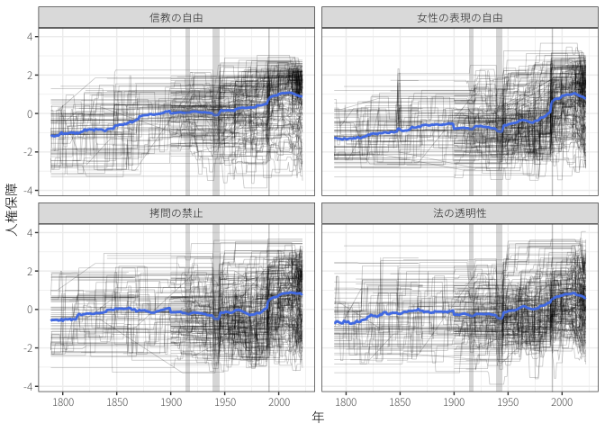

人権保障
国際公共政策学
はじめに
17-18世紀の啓蒙思想家\(\leadsto\)人が生まれながらにして持っている自然権 (natural rights)
アメリカ独立宣言（1776年）
われわれは、以下の事実を自明のことと信じる。すなわち、すべての人間は生まれながらにして平等であり、その創造主によって、生命、自由、および幸福の追求を含む不可侵の権利を与えられているということ。
フランス人権宣言（1789年）
フランス人権宣言 人は、自由かつ諸権利において平等なものとして生まれ、そして生存する。
- なぜ人権は保障されないのか？
- なぜ他国の人権保障に関心を持つのか？
- どのように国際的な人権保障に取り組んでいるのか？
1 人権の国際化
1.1 第二次世界大戦まで
人権問題＝国内問題／主権国家体系の下で他国の国内問題に干渉することは内政不干渉原則？
- 国家主権の契機となったウェストファリア条約
- 宗教戦争であった30年戦争
- 領主の信仰の自由
- 内政問題を口実とした戦争を回避するためのメカニズムとしての主権
\(\leadsto\)国家主権の下で人権侵害／国際社会からの批判をかわす口実
内政問題である人権問題に対して国際社会が無関心ではいられない？
- 19世紀における奴隷制度の廃止運動
- 第1次世界大戦後の民族自決と少数民族
- 産業化における労働者の保護
1.2 第二次世界大戦後
ナチス・ドイツによるユダヤ人虐殺（ホロコースト）\(\leadsto\)人権が国際問題として認知
- 第2次世界大戦は自由主義とファシズムの戦い（ということになっていた）。
\(\leadsto\)国連憲章においても人権に関する言及、国際関心事項
国連憲章 第55条
人民の同権及び自決の原則の尊重に基礎をおく諸国間の平和的且つ友好的関係に必要な安定及び福祉の条件を創造するために、国際連合は、次のことを促進しなければならない。
- 人種、性、言語又は宗教による差別のないすべての者のための人権及び基本的自由の普遍的な尊重及び遵守
- 国連総会第3委員会
1948年に国連総会が世界人権宣言 (Universal Declaration of Human Rights; A/RES/217 (III)) を採択
- 第1,2条は人間の尊厳に関する基本原則
- 第3-19条は市民的自由
- 第20-27条は政治的・社会的・経済的平等
- 第28,29条は集団としての権利
国連総会決議\(\leadsto\)法的拘束力はない／現在の国際人権法の基盤
最初の国際人権条約はジェノサイド条約（1948年採択、1951年発効）
- 集団殺害 (genocide) が定義
- 国際法上の犯罪であるとしてその防止と処罰が義務付け
- 日本は批准せず
1.3 国際人権章典
世界人権宣言\(\leadsto\) 2つの人権規約が1966年に採択、1976年に発効1
1 日本では社会権規約をA規約、自由権規約をB規約と呼ぶことがある。
- 自由権規約 (International Covenant on Civil and Political Rights)
- 社会権規約 (International Covenant on Economic, Social and Cultural Rights)
\(\leadsto\)国際人権章典 (International Bill of Human Rights)：世界人権宣言と自由権規約、社会権規約および選択議定書
人権＝自由権＋社会権
- 自由権：国家が市民の生活や政治活動に介入しないことで保障される権利
- 社会権：市民の経済的・社会的・文化的活動を支援することで保障される権利
その後も様々な人権条約および追加議定書 (optional protocol) が締結\(\leadsto\)包括的な国際人権法が形成
1.4 自由権の保障
2 人権保障を巡る政治
人権は生まれながらにして全ての人間が持っている権利\(\leadsto\)普遍的 (universal)
ただし、どのような権利を、どの程度保障すべきなのかについての考えは時代や地域によって異なる。
- 冷戦期：西側諸国は政治的自由に関する自由権／東側諸国は平等や社会保障に関する社会権を重視
- 人権を重視する国でも（アメリカのように）テロリストへの拷問
- 自由権は平等で自律的な個人を前提とした西洋的価値観に基づいている？
- \(\leadsto\)他の地域では十分には受け入れがたい？
- 東アジア諸国が成長\(\leadsto\)「アジア的価値観 (Asian value) 」
- アジアでは個人の自由よりも家族や社会の発展、調和を優先
- 既存の国際人権法は西洋的価値観の押し付け、内政干渉
- 自由主義諸国はこうした考えは権威主義体制を正当化するに過ぎないと批判
- 東アジア諸国が成長\(\leadsto\)「アジア的価値観 (Asian value) 」
- 自由権を第1世代の人権、社会権を第2世代の人権とも呼ぶ
- 第3世代の人権：発展の権利、平和への権利など集団として人権
人権は普遍的／国際人権法も普遍的あるいは中立的なものではない\(\leadsto\)国際的な人権保障を巡る政治が存在
2.1 国家による人権侵害
ベルギーのレオポルド2世：19世紀末から20世紀初頭にかけてのコンゴ自由国の苛烈な統治
- 象牙や天然ゴムの生産のために先住民を強制的に労働・厳しい処罰
- レオポルド2世が邪悪な性格であったり、ベルギー本国でも独裁的であったわけではない。
ミャンマーの民主派のアウンサンスーチーがリーダーになってもロヒンギャへの弾圧は継続


\(\leadsto\)人権侵害が起こる理由は政治家の性格だけでなく、国内政治にもある？
- 財政が乏しく社会保障を整備できない／軍隊や警察へのコントロールが不十分である(Cole 2015)
- 国家安全保障を理由（あるいは口実）とした人権の制約(Poe と Tate 1994; Krain 1997)
- 政府に対する抗議を犯罪として取り締まり／適切な手続き (due process) なしの裁判
- 敵対国の出身者（WW2における在米日系人）やテロリスト容疑者（ドローンによる標的殺害）を不当に拘束、殺害
- テロリズム予防のために市民のプライバシーを侵害（愛国者法）
- 権威主義国や新興民主主義国(Davenport 1995)において政権の維持のために反政府勢力や他民族を弾圧
- 民主主義国：選挙を通じて平和的に政権交代ができる\(\leadsto\)反政府活動は起こりにくい
- 一党独裁や個人独裁の国：反政府活動を抑止できる\(\leadsto\)人権侵害が起こりにくい
- 多党独裁の国：政治的競争がある\(\leadsto\)起こりやすい(Vreeland 2008)
2.2 人権条約への参加
- 新興民主主義国：人権条約に批准\(\leadsto\)人権侵害のコストを高める\(\leadsto\)政治体制を維持(Moravcsik 2000)
- 成熟した民主主義国：既に人権保障を行っている\(\leadsto\)わざわざ人権条約を批准しない
民主主義国は民主化や人権保障を条件に他国に利益を供与
- 北大西洋条約機構や欧州連合では民主主義や人権保障、自由経済などを加盟要件
- トルコやハンガリーのようにEUへの加盟を目指して、あるいは追放を恐れて人権保障に取り組むとは限らない。
2.3 他国の人権問題
なぜ他国の人権環境が改善しても直接の利益にはならないにもかかわらず、他国の人権保障に関心を持つのか？
- 道徳的理由
- 人々は弱者に対して共感、同情する社会的生き物
- 他国の人権侵害を看過\(\leadsto\)人権が侵害されてもよい状況や人々があることを認める\(\leadsto\)自身への人権侵害を許容
- 人権は普遍的なものであるという規範の内面化
- 戦略的理由
- 他国が人権を保障\(\leadsto\)（さらには民主化することにより）国際的な平和と経済繁栄が実現\(\leadsto\)自国の国益
- 周辺国の人権侵害\(\leadsto\)内戦など\(\leadsto\)近隣諸国に戦火の拡大や難民の流出で被害
- 地域貿易協定に労働者の権利に関する条項\(\leadsto\)途上国の労働環境を改善\(\leadsto\)先進国の労働者の競争力を向上(Hafner-Burton 2005)
- 技術的理由
- 情報通信技術の発達、特にSNS\(\leadsto\)人々は他国の人権問題に関心を持たざるを得ない
3 国際的な人権保障
一般的に国際制度に意味があるのかは見解が分かれている。
- アナーキーな国際社会では国家に制度の遵守を強制することはできない\(\leadsto\)制度には国家の行動に影響する効果はない(Mearsheimer 2017)
- ほとんどの国はほとんどの時期においてほとんどのルールに従っている(Henkin 1979)
- 国際制度に意味がないのであれば、わざわざ国家が時間や労力をかけて交渉する意味は＞
- 制度に違反するのは遵守する能力が欠如していたり、制度が曖昧である\(\leadsto\)不遵守(Chayes と Chayes 1993)
- 国際制度は国家が同意したものである\(\leadsto\)遵守できるルールが制度として形になっているだけ(Downs, Rocke, と Barsoom 1996)
3.1 人権条約の効果
人権条約の効果を検証する上での問題1：人権侵害の発見
- 一般的に、人権侵害は外部から確認しにくい
- Amnesty Internationalやアメリカ国務省のレポートに依拠2
これらの情報が網羅的かつ正しいとししても、人権侵害の基準が時代と共に変化するかも？
- 人権規範が浸透する\(\leadsto\)人権侵害とみなされていなかった行為がそうであるとみなされる
- 技術革新・リソースの向上\(\leadsto\)多くの人権侵害の「発見」
- 時間変化を考慮して分析すると、（拷問の禁止に関する）人権保障の程度は改善(Fariss 2014)
人権条約の効果を検証する上での問題2：自己選択
- 人権保障に熱心な国家が人権条約に批准？\(\leadsto\)見かけの相関
- 例：民主主義国や経済的に豊かな国
第3の要因を考慮して分析すると人権条約は効果がないか、負の効果があるという研究(Keith 1999; Hathaway 2001; Hill Jr 2010)
- 人権条約に強制力はなし／人権を保障させるために圧力を欠ける国は少ない
- 人権条約への批准は人権を保障するという評判を得るため
- 多党独裁の国：反体制派の影響力が高い\(\leadsto\)人権条約に批准する／弾圧のために人権を侵害
一方で、人権条約の効果は特定の条件において生じるという見方(Neumayer 2005; Murdie と Davis 2012; Conrad と Ritter 2013; Lupu 2013)
人権条約の短期的効果は小さいが、長期的な効果があるという見解(Hafner-Burton と Tsutsui 2007)
- 人権問題を国際問題として扱う土壌
- 人権条約がなければ人権NGOは人権侵害の評価もできない。
- 国家は評判 (reputation) を気にする\(\leadsto\)NGOをはじめとする*越境的アドボカシー・ネットワーク (transnational advocacy network) による名指しと非難** (naming and shaming) に効果がある？(Hafner-Burton 2008)
- Freedom HouseやHuman Rights Watchも代表的な人権NGO
- ブーメラン・モデル：外国の政府やNGO、国際機構を通じて自国の政府に圧力をかける(Keck と Sikkink 1999)
- 1975年の欧州安全保障協力会議 (Conference on Security and Cooperation in Europe: CSCE)のヘルシンキ宣言：東西で領土保全、経済交流、人権保障に合意\(\leadsto\)共産主義国内における人権活動の活発化
3.2 人権制裁
外部からの圧力、制裁\(\leadsto\)人権条約を遵守
- 経済制裁をする国が被る費用＜他国の人権状況の改善という利益？
いくつかの条件の下で、国家は人権制裁を行うと考えられる。
- 国内から他国の人権状況の改善のために行動するよう政治的圧力
- 越境的アボドカシー・ネットワークは市民に外国の人権問題を注意喚起
- 敵対国で人権侵害
- 内政不干渉原則を越えるような価値と結合
- 民族浄化や人種差別は人権問題を越えて民族自決権や反植民地主義といった価値の問題？
共同で人権制裁＝囚人のジレンマ
- 協力して制裁をすれば改善する／他国の制裁にタダ乗り
南アフリカのアパルトヘイト撤廃は経済制裁による人権問題の解決の数少ない例


制裁\(\leadsto\)無辜の市民に被害？
- 政治的エリートのみを標的とするスマート制裁
- 十分な効果を上げられるのか、本当にエリートのみに制裁を加えられるのか？
3.3 国際的審査
3.3.1 人権理事会
国際連合の人権理事会 (Human Rights Council) や国連人権高等弁務官事務所 (Office of the High Commissioner for Human Rights: OHCHR) ：加盟国の人権状況を包括的に監視、審査

- 人権理事会は2006年に国連人権委員会から改組
- 普遍的定期審査 (Universal Periodic Review: UPR)：加盟国の人権状況を審査する中心的活動
- 他にも国別あるいはテーマ別の特別手続きや個人による不服申立手続きなど
- 専門家からなる人権理事会諮問委員会から助言
人権侵害を行っているとされている国も理事国になるなどの問題も
3.3.2 人権条約の委員会
人権条約ごとにも委員会が設置され、締約国の履行を確認
- 自由権規約や社会権規約では、専門家からなる自由権(社会権)規約委員会に国家が履行状況を定期的に報告し、委員会が審査
最も洗礼された人権の国際的な保障手続きとして個人請願 (individual petition)
- 1950年に欧州評議会加盟国が欧州人権条約に批准
- 人権侵害を受けている加盟国の市民が欧州人権裁判所で訴訟
- 自由権規約第1選択議定書や社会権規約選択議定書の締約国国民は個人通報制度 (individual complaints mechanism) を利用可
3.3.3 企業による人権保障
多くの場合、人権侵害を行うのは国家であるが、近年は企業による人権侵害にも関心
- 2011年に人権理事会はビジネスと人権に関する指導原則を採択\(\leadsto\)企業にも人権尊重を求める
- 一部の国ではこれに従って行動計画を策定
- 国連グローバル・コンパクト：人権、労働、環境、腐敗防止に関する10の原則を掲げ、企業は自発的に参加し、進捗の報告
- 国連責任投資原則：6つのESG投資に関する原則を掲げ、投資家に遵守を呼びかけ
- グローバル・レポーティング・イニシアティブ：経済、環境、社会に与える影響の報告基準を策定
\(\leadsto\)政治的パワーがなくても国際規範を作り、企業に遵守させることは可能？
4 日本の人権状況
日本国憲法：第11条に基本的人権の保障が明記、第3章に具体的な権利が列挙
- 国際的に見ると、制定当初は人権規定が豊富／一度も改正されず、現在ではやや少ない3
3 ケネス・盛・マッケルウェイン「日本国憲法：その特異な歩みと構造」

- 例：ジェノサイド条約／個人通報制度を定める自由権規約および社会権規約の第一選択議定書／死刑撤廃を定める自由権規約第二選択議定書など
Freedom Houseによると日本は自由が保障（96/100点、2023年現在）
Human Rights Watchなどの人権NGOは独自にも人権問題を指摘
- 国境なき記者団の報道の自由ランキング

- 世界経済フォーラムのジェンダーギャップ指数
- UNDPのジェンダー不平等指数
アメリカ国務省 (Department of State) は各国の人権状況の報告書を作成
5 戦争と人権
5.1 平和維持活動の拡大
冷戦期に米ソの拒否権によって国連が機能不全\(\leadsto\)平和維持活動 (peacekeeping operation)
- PKO：終結した紛争の停戦や撤退などを監視して、平和が維持するように務める活動
- PKOの受け入れや要因の提供は自発的に行う。
- 当事者に対して中立・不偏であり、内政に干渉しない。
- 武力行使は自衛のために必要最小限に留める。
- 戦争を集結させることを目的に介入を行う（第7章下の）強制措置とは異なる。
冷戦終結\(\leadsto\)国連への期待の高まり\(\leadsto\)PKOの数も増加
- 1992年の「平和への課題」：ブトロス＝ガリ事務総長は国連の平和機能として予防外交、平和創造、平和維持、平和構築を示す。
5.1.1 平和構築
平和構築 (peacebuilding) ：紛争が再発しないような社会を形成していく活動
- 武装解除・動員解除・社会復帰 (Disarmament, Demobilization, Reintegration: DDR) 、難民の帰還、文民警察の改革、選挙の実施・監視、統治機構の支援など
軍隊による停戦監視を越えて、警察や文民も含めて包括的に平和活動を行うように（第2世代PKO、複合型PKO）
- 2000年の「ブラヒミ報告」：国連の平和活動の中核として位置づけ
国連が暫定的に統治を行うことも
- カンボジア
- 日本はカンボジア民法の起草支援など協力
- 東ティモール
- コソボなど
5.1.2 国際選挙監視
選挙の国際的な監視の受け入れは拡大
- 自由で公正な選挙が規範として受け入れられ\(\leadsto\)監視する必要
- 名指しと非難\(\leadsto\)選挙監視を受け入れること自体も規範となりつつ(Hyde 2011)
選挙監視によって選挙不正が減少しているかは不明
- 選挙権威主義国：監視の受け入れれ（不正が発覚しなければ）\(\leadsto\)民主主義の評判や援助を獲得
- 監視されても不正が発覚しない（あるいは発覚しても問題はない）\(\leadsto\)監視を受け入れている可能性。
5.1.3 平和創造（執行）
平和的手段による解決が不可\(\leadsto\)平和創造 (peace enforcement) 部隊による介入も主張（第3世代PKO）
- ユーゴスラビア内戦やソマリア内戦：第7章下の武力行使が認められたPKO
- 兵力や装備が不十分、PKO部隊からも死者\(\leadsto\)挫折
1995年の「平和への課題：追補」：平和維持や平和構築が強調され、国連独自の平和執行機能は現状では非現実であると認める。
5.2 人道的介入
人道的介入 (humanitarian intervention)：著しい人権侵害や人道危機を阻止するために当事国の同意なく武力を行使すること
- 多くの場合、政府が特定の集団を迫害しているときに介入すべきだと問題に
人道危機を放置するわけにはいかない／国家主権を侵害、内政不干渉原則や武力行使禁止原則に違反
- しばしば、自国民や少数民族の保護は武力行使の口実に
5.2.1 ユーゴ内戦
旧ユーゴスラビア連邦は多民族国家、指導者ティトーの死亡と冷戦終結\(\leadsto\)国民国家 (nation state) に分裂

- 民族自決 (self-determination)：民族が国家を形成する権利
冷戦の終結\(\leadsto\)社会主義国家も民主化を行う／民族対立を助長
- 最大民族であるセルビア人に支配されることを他民族は恐れる。
- 独立することでセルビア人が他国で少数民族になることをセルビアは恐れる。
\(\leadsto\)ユーゴから独立を求める各国とセルビアとの間で内戦
セルビア人によるジェノサイドを民族浄化 (ethnic cleansing) と呼ぶ\(\leadsto\)国際社会からの支持
- セルビア人だけが民族浄化していたわけではない。
国連は平和執行部隊を投入するが兵力や情報が足りない\(\leadsto\)人道危機を止めることができず
- 特に、スレブレニッツァの悲劇では国連軍の目の前で虐殺\(\leadsto\)国連の限界を知らしめた。
スロベニア、クロアチア、ボスニア＝ヘルツェゴヴィナは独立する\(\leadsto\)コソボもセルビアからの独立を求めて内戦が再発
- セルビアによるコソボのアルバニア人が虐殺が起こっているとしてNATOが（安保理決議なしに）空爆
国家主権／民族自決権／人権のトリレンマ？
5.2.2 保護する責任
保護する責任 (responsibility to protect: R2P)：国家は自国民を保護する責任を持っているが、その責任を果たせ（さ）ない場合、国際社会が代わりに保護
- 各々の国家は、大量殺戮、戦争犯罪、民族浄化及び人道に対する犯罪からその国の人々を保護する責任を負う。この責任は、適切かつ必要な手段を通じ、扇動を含むこのような犯罪を予防することを伴う。我々は、この責任を受け入れ、それに則って行動する。国際社会は、適切な場合に、国家がその責任を果たすことを奨励し助けるべきであり、国連が早期警戒能力を確立することを支援すべきである。
- 国際社会もまた、国連を通じ、大量殺戮、戦争犯罪、民族浄化及び人道に対する犯罪から人々を保護することを助けるために、憲章第６章及び８章にしたがって、適切な外交的、人道的及びその他の平和的手段を用いる責任を負う。この文脈で、我々は、仮に平和的手段が不十分であり、国家当局が大量殺戮、戦争犯罪、民族浄化及び人道に対する犯罪から自国民を保護することに明らかに失敗している場合は、適切な時期に断固とした方法で、安全保障理事会を通じ、第７章を含む国連憲章に則り、個々の状況に応じ、かつ適切であれば関係する地域機関とも協力しつつ、集団的行動をとる用意がある。我々は、総会が、大量殺戮、戦争犯罪、民族浄化及び人道に対する犯罪から人々を保護する責任及びその影響について、国連憲章及び国際法の諸原則に留意しつつ、検討を継続する必要性を強調する。我々はまた、必要に応じかつ適切に、大量殺戮、戦争犯罪、民族浄化及び人道に対する犯罪から人々を保護する国家の能力を構築することを助け、また、危機や紛争が勃発する緊張に晒されている国家を支援することにコミットする考えである。
- 恣意的な介入を排除する仕組みを構築？
- 主権を重んじる国家から批判
- 自衛権の行使や第7章の強制行動で正当化せざるを得ない。
5.3 国際人道法
武力行使の合法性を定める国際法 (jus ad bellum)／武力行使の形態を規律する国際法 (jus in bello)
- 戦争法、戦時国際法、武力紛争法、国際人道法などと呼ばれる。
- 戦闘の手段や方法、犠牲者の保護などが定められている。
5.3.1 国際刑事法廷
戦争犯罪の中でも深刻なものを戦争裁判で処罰することがある。
- 第2次世界大戦後の極東国際軍事裁判やニュルベルグ裁判がその先駆け
- ユーゴ内戦やルワンダ内戦後にも安保理が刑事法廷を設置
2003年には国際刑事裁判所 (International Criminal Court: ICC) が設立
- 国際法によって個人の行動を規制し、処罰することができる点で珍しい
ICCローマ規程 第5条1項
裁判所の管轄権は、国際社会全体の関心事である最も重大な犯罪に限定する。裁判所は、この規程に基づき次の犯罪について管轄権を有する。
- 集団殺害犯罪
- 人道に対する犯罪
- 戦争犯罪
- 侵略犯罪
ICCローマ規程 第12条
- この規程の締約国となる国は、第5条に規定する犯罪についての裁判所の管轄権を受諾する。
- 裁判所は、（略）次の(a)又は(b)に掲げる国の1又は2以上がこの規程の締約国であるとき（略）は、その管轄権を行使することができる。
- 領域内において問題となる行為が発生した国（略）
- 犯罪の被疑者の国籍国
ICCローマ規程 第13条
裁判所は、次の場合において、この規程に基づき、第五条に規定する犯罪について管轄権を行使することができる。
- 締約国が（略）事態を検察官に付託する場合
- 国際連合憲章第7章の規定に基づいて行動する安全保障理事会が（略）事態を検察官に付託する場合
- 検察官が（略）捜査に着手した場合
- 関係国が訴追する意思と能力を有する場合はICCは事件を受理せず
ICCローマ規程 第59条1項
仮逮捕又は逮捕及び引渡しの請求を受けた締約国は、その国内法及び第九部の規定に従い、被疑者を逮捕するための措置を直ちにとる。
ICCにより訴追されるリスクの大きい国は参加せず

{kind=link}
{kind=link}
{kind=link}
{kind=link}
{kind=link}
{kind=link}
- アメリカ：政治的な理由による訴追が行われる可能性、ICCに対するコントロールの不在を理由に批判
- 第98条に基づき、アメリカ人の引き渡し免除を様々な国に要求
- アフリカの事件が中心であると批判
ICCローマ規程 第98条2項
裁判所は、被請求国に対して派遣国の国民の裁判所への引渡しに当該派遣国の同意を必要とするという国際約束に基づく義務に違反する行動を求めることとなり得る引渡しの請求を行うことができない。ただし、裁判所が引渡しへの同意について当該派遣国の協力をあらかじめ得ることができる場合は、この限りでない。
事件が進行中であるが多いとは言えない。
- 限定的ながらも国際人道法違反を抑止している(Jo と Simmons 2016; Chaudoin 2016)
- ただし、訴追のリスクを恐れて武力紛争が長引く傾向に(Prorok 2017)
5.3.2 移行期正義
移行期正義 (transitional justice)：内戦が終結して平和が構築される中で紛争中の犯罪に対処すること
- しばしば、裁判による戦争犯罪者の訴追よりも、紛争後社会の和解 (reconciliation) を重視
真実和解委員会による人権侵害の解明と記録、人権侵害の被害者へのケア、文民統制の強化や前体制関係者の公職追放など
- 刑事訴追が私怨を含む敵対的なものに\(\leadsto\)公正な裁判を行うのが困難
- 刑事訴追のおそれに\(\leadsto\)政治家が政権の明け渡しを拒否する、情報を破棄する可能性
\(\leadsto\)政府高官を真実解明と社会の安定のために恩赦 (amnesty) するべき？
5.4 安保理の機能拡大
戦後の平和に対する脅威＝国連設立当初に想定していたような「国家間戦争」だけではない
- 内戦やテロリズムへの対処、人権侵害の防止、安定した社会の構築などにも関与
- 感染症（エボラ出血熱）や気候変動、難民なども「平和に対する脅威」として認識されつつあり
- 安全保障化 (securitization)：従来、安全保障上の脅威とされていなかった事象が脅威として認識される現象
\(\leadsto\)安保理の取る手段も多様化
\(\leadsto\)安保理の機能の拡大の是非
参考文献
Chaudoin, Stephen. 2016. 「How contestation moderates the effects of international institutions: The International Criminal Court and Kenya」. The Journal of Politics 78 (2): 557–71.
Chayes, Abram, と Antonia Handler Chayes. 1993. 「On compliance」. International organization 47 (2): 175–205.
Cole, Wade M. 2015. 「Mind the gap: State capacity and the implementation of human rights treaties」. International Organization 69 (2): 405–41.
Conrad, Courtenay R, と Emily Hencken Ritter. 2013. 「Treaties, tenure, and torture: The conflicting domestic effects of international law」. The Journal of Politics 75 (2): 397–409.
Davenport, Christian. 1995. 「Multi-dimensional threat perception and state repression: An inquiry into why states apply negative sanctions」. American Journal of Political Science, 683–713.
Downs, George W, David M Rocke, と Peter N Barsoom. 1996. 「Is the good news about compliance good news about cooperation?」 International organization 50 (3): 379–406.
Fariss, Christopher J. 2014. 「Respect for human rights has improved over time: Modeling the changing standard of accountability」. American Political Science Review 108 (2): 297–318.
Hafner-Burton, Emilie M. 2005. 「Trading human rights: How preferential trade agreements influence government repression」. International Organization 59 (3): 593–629.
———. 2008. 「Sticks and stones: Naming and shaming the human rights enforcement problem」. International organization 62 (4): 689–716.
Hafner-Burton, Emilie M, と Kiyoteru Tsutsui. 2007. 「Justice lost! The failure of international human rights law to matter where needed most」. Journal of Peace Research 44 (4): 407–25.
Hathaway, Oona A. 2001. 「Do human rights treaties make a difference」. Yale lj 111: 1935.
Henkin, Louis. 1979. How nations behave: law and foreign policy. Columbia University Press.
Hill Jr, Daniel W. 2010. 「Estimating the effects of human rights treaties on state behavior」. The Journal of Politics 72 (4): 1161–74.
Hyde, Susan D. 2011. 「Catch us if you can: Election monitoring and international norm diffusion」. American Journal of Political Science 55 (2): 356–69.
Jo, Hyeran, と Beth A Simmons. 2016. 「Can the international criminal court deter atrocity?」 International Organization 70 (3): 443–75.
Keck, Margaret E, と Kathryn Sikkink. 1999. 「Transnational advocacy networks in international and regional politics」. International social science journal 51 (159): 89–101.
Keith, Linda Camp. 1999. 「The United Nations International Covenant on Civil and Political Rights: Does it make a difference in human rights behavior?」 Journal of Peace Research 36 (1): 95–118.
Krain, Matthew. 1997. 「State-sponsored mass murder: The onset and severity of genocides and politicides」. Journal of conflict resolution 41 (3): 331–60.
Lupu, Yonatan. 2013. 「Best evidence: The role of information in domestic judicial enforcement of international human rights agreements」. International Organization 67 (3): 469–503.
Mearsheimer, John J. 2017. 「The false promise of international institutions」. International organization, 237–82. Routledge.
Moravcsik, Andrew. 2000. 「The origins of human rights regimes: Democratic delegation in postwar Europe」. International organization 54 (2): 217–52.
Murdie, Amanda M, と David R Davis. 2012. 「Shaming and blaming: Using events data to assess the impact of human rights INGOs」. International Studies Quarterly 56 (1): 1–16.
Neumayer, Eric. 2005. 「Do international human rights treaties improve respect for human rights?」 Journal of conflict resolution 49 (6): 925–53.
Poe, Steven C, と C Neal Tate. 1994. 「Repression of human rights to personal integrity in the 1980s: A global analysis」. American political science review 88 (4): 853–72.
Prorok, Alyssa K. 2017. 「The (in) compatibility of peace and justice? The International Criminal Court and civil conflict termination」. International organization 71 (2): 213–43.
Vreeland, James Raymond. 2008. 「Political institutions and human rights: Why dictatorships enter into the United Nations Convention Against Torture」. International Organization 62 (1): 65–101.